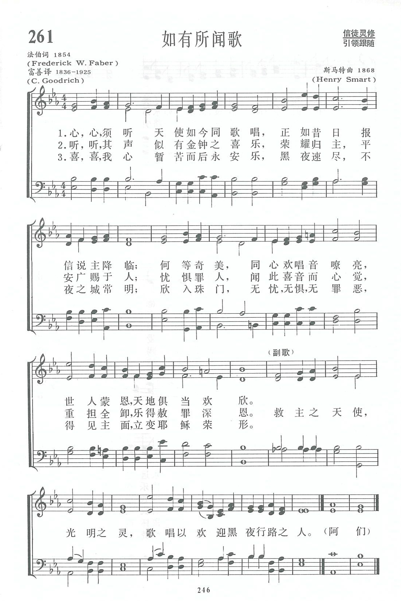
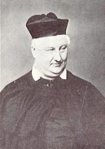
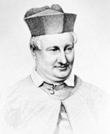

|
|
|
|
1 Hark, hark, my soul! Angelic songs are swelling Refrain: 2 Onward we go, for still we hear them singing: 3 Far, far away, like bells at evening pealing, 4 Angels, sing on, your faithful watches keeping;
|
第261首《如有所聞歌》 |
|
https://www.zanmeishige.com/tab/13934.html?songbook=1&index=261

|
|
|
|
|


https://www.youtube.com/watch?v=WBTut0AZgtk - Hark, Hark, My Soul! Angelic Songs are Swelling (Pilgrims)
https://youtu.be/J8Hh2NDoAzs
| Text: | Hark! Hark, My Soul! |
| Author: | Frederick W. Faber |
| Tune: | PILGRIMS (Smart) |
| Composer: | Henry Smart |
| Short Name: | Frederick William Faber |
| Full Name: | Faber, Frederick William, 1814-1863 |
| Birth Year: | 1814 |
| Death Year: | 1863 |

Raised in the Church of England, Frederick W. Faber (b. Calverly, Yorkshire, England, 1814; d. Kensington, London, England, 1863) came from a Huguenot and strict Calvinistic family background. He was educated at Balliol College, Oxford, and ordained in the Church of England in 1839. Influenced by the teaching of John Henry Newman, Faber followed Newman into the Roman Catholic Church in 1845 and served under Newman's supervision in the Oratory of St. Philip Neri. Because he believed that Roman Catholics should sing hymns like those written by John Newton, Charles Wesley, and William Cowpe, Faber wrote 150 hymns himself. One of his best known, "Faith of Our Fathers," originally had these words in its third stanza: "Faith of Our Fathers! Mary's prayers/Shall win our country back to thee." He published his hymns in various volumes and finally collected all of them in Hymns (1862).
Bert Polman
Tune Information
| Title: | PILGRIMS (Smart) |
| Composer: | Henry Thomas Smart (1868) |
| Meter: | 11.10.11.10 with refrain |
| Incipit: | 35432 12343 25176 |
| Key: | D Major |
| Copyright: | Public Domain |
| Short Name: | Henry Thomas Smart |
| Full Name: | Smart, Henry Thomas, 1813-1879 |
| Birth Year: | 1813 |
| Death Year: | 1879 |
Henry Smart (b. Marylebone, London, England, 1813; d. Hampstead, London, 1879),

a capable composer of church music who wrote some very fine hymn tunes (REGENT SQUARE, 354, is the best-known).
Smart gave up a career in the legal profession for one in music. Although largely self taught, he became proficient in organ playing and composition, and he was a music teacher and critic. Organist in a number of London churches, including St. Luke's, Old Street (1844-1864), and St. Pancras (1864-1869), Smart was famous for his extemporizations and for his accompaniment of congregational singing. He became completely blind at the age of fifty-two, but his remarkable memory enabled him to continue playing the organ. Fascinated by organs as a youth, Smart designed organs for important places such as St. Andrew Hall in Glasgow and the Town Hall in Leeds. He composed an opera, oratorios, part-songs, some instrumental music, and many hymn tunes, as well as a large number of works for organ and choir. He edited the Choralebook (1858), the English Presbyterian Psalms and Hymns for Divine Worship (1867), and the Scottish Presbyterian Hymnal (1875). Some of his hymn tunes were first published in Hymns Ancient and Modern (1861).
Bert Polman
第261首 如有所闻歌 Hark!hark，my soul!angelic songs are swelling _F.W．Faber
经文：“我又看见且听见宝座与活物并长老的周围有许多天使的声音”(启5：11)。
这首诗是法伯(F.W．Faber，1814—1863)所作。法伯生于英国约克郡的小市镇，家庭是法国宗教改革者的后代。起先，他受加尔文(见第5首注①)的影响，但在牛津大学读书时受到纽曼(事略参阅262首)的影响加入了圣公会。1837年起任牧职，与纽曼合作编译《古教父文库》。1845年继纽曼之后也加入了天主教，并进了奥利托利修会。
但他终生保持着原来的热情，精神旺盛地进行教会与社会的改革，著有灵修书籍数卷，都是深入浅出，步步引人入胜的佳作。他看到卫斯理弟兄和约翰·牛顿所编写的圣诗不胫而走，活泼有力，曾说“多年来这些诗有种魅力，使我着了迷，随时都会回到我的脑海”。于是以福音派的圣诗为范本，另写些合乎时代的新诗供天主教平信徒阅读之用。结果有好几首也被应用到新教的赞美诗里。
以前我国六公会通用的《普天颂赞》里便采用了下列五首：
22首《广大慈悲歌》；
114首《主钉十架歌》；
339首《守信歌》(先贤之信)；
36 首《如有所闻歌》和
373首《甜蜜乐园歌》。
《新编》选入了这首《如有所闻歌》。原来的题目是《黑夜的旅客》。反映在副歌中“欢迎黑夜行路之人”句。因此这首诗的调名为《天路客(PILGRIMS)》，
该诗是早期来我国的传教士富善(事略参阅第51首)所译，文词清晰，引人入胜，是福音派信徒所乐于唱颂的，曾由福音圣诗名作曲家桑基为其另谱一曲，简谱如下：
《普天颂赞》第364首第二调
《新编》所用的曲调是斯马特(H。Smart，1813—1879)所谱。他是圣公会教友，著名风琴演奏家和作曲家。他父亲是位小提琴家。斯马特曾向父亲学习音乐，也曾拜一位小提琴家为师。但大部分音乐都是由于他刻苦努力，在领导唱诗班时边教边学，终于自学成才，成为当时第一流的管风琴师。他历任伦敦好几座大教堂的琴师，曾写过不少宗教音乐和赞美诗，也曾为英国长老会编了一部礼拜及通用的诗谱和风琴乐谱多册。在他52岁时，不幸双目失明，但他仍坚持谱曲弹琴，并在他女儿帮助下，合作编成一部歌剧《雅各》和许多诗谱。《新编》采用了他四首曲谱，即第261、326、372首以及第388首。
https://www.xueshengshi.com/?p=7840
Words: Frederick William Faber (b. June 28, 1814; d.
Sept. 26, 1863)
Music: Pilgrims, by Henry Thomas Smart (b. Oct. 26, 1813;
d. July 6, 1879)
Links:
Wordwise Hymns
The Cyber
Hymnal
Note: Faber was an Anglican, later turned Roman Catholic, who hoped to provide the Catholic Church with an array of hymns to sing, as men like Newton and Wesley had done for Protestants. Faith of Our Fathers is one of these (now edited to remove specifically Catholic sentiments), and There’s a Wideness in God’s Mercy is another give to us by Faber.
The present hymn was published in 1854. He called it “Pilgrims of the Night,” and Henry Smart named his tune for it Pilgrims, accordingly. Commonly used today, of the author’s original seven stanzas, are CH-1, 3, 4, and 7.
CH-1) Hark! hark, my soul! angelic songs are swelling,
O’er earth’s green fields and ocean’s wave-beat shore:
How sweet the truth those blessèd strains are telling
Of that new life when sin shall be no more.
Angels of Jesus, angels of light,
Singing to welcome the pilgrims of the night!
This is a song that has been roundly criticized for its vagueness and sentimentality. It seems to be about dying and going to heaven. But its flowery words of poetry that obscure the truth more than illuminate it.
Hymn writer John Ellerton (1826-1895) said of the hymn, “We inquire in vain into the meaning of the ‘Pilgrims of the Night.’ He claimed congregations are merely “carried away by the rhythm and musical ring of the lines.” Albert E. Bailey, in The Gospel in Hymns, wrote:
“Sentiment has got the better of thought. We seem to be in that state of semi-consciousness which often precedes dying, and we experience a pleasing hallucination.”
Salvation Army Commissioner, George Scott Railton (1849-1913), went so far as to take the framework of the hymn and totally recast it into a militant Salvationist song, calling for a commitment to the battle for the right. His version says, in part:
Hark, hark, my soul, what warlike songs are swelling
Through all the land and on from door to door;
How grand the truths those burning strains are telling
Of that great war till sin shall be no more.Onward we go, the world shall hear our singing:
Come guilty souls, for Jesus bids you come;
And through the dark its echoes, loudly ringing,
Shall lead the wretched, lost and wandering home.
The Cyber Hymnal provides still another attempt, by Henry Allon (1818-1892) to take the pattern of Faber’s hymn and give it some kind of clearer evangelical meaning. You can judge the result for yourself, here.
J. R. Watson, in his book An Annotated Anthology of Hymns (p. 298) is a little more positive about Faber’s hymn, though guardedly so. He writes:
“Faber’s emotionalism, and his uninhibited use of such imagery, demonstrates his love of a sentiment that comes close to sentimentality. But his sentiment, however excessive it may seem, touches a tender spot.”
But let’s turn from these comments, and the attempts of others to make a better hymn out of Faber’s, and consider the original. Frederick Faber pictures this life as dark and dangerous. There is a kind of bleak pessimism in some of the stanzas. For example:
CH-2) Darker than night life’s shadows fall around us,
And like benighted men we miss our mark:
God hides Himself, and grace hath scarcely found us,
E’er death finds out his victims in the dark.
From this discouraging view, the author points us to Christ and the Christian gospel, and for the most part the hymn looks forward to the brighter day of eternity. But serious questions about the meaning of some lines may leave seekers bewildered. For instance, what on earth are “faith’s moonbeams” (CH-6)?
The voice of Jesus may sound like distant bells (CH-3), and there may be some kind of “music of the gospel” (CH-4), but what precisely is the message? And what are these angels’ songs the author repeatedly tells us about?
If we cannot learn how it is that Christ provides the answer for sin’s condemnation, through faith in His finished work on Calvary, what hope is there for us? The heart of the gospel is, “The blood of Jesus Christ His Son cleanses us from all sin” (I Jn. 1:7; cf. Jn. 3:16; Acts 16:30-31; Eph. 1:7; I Pet. 2:24; 3:18).
CH-4) Onward we go, for still we hear them singing,
“Come, weary souls, for Jesus bids you come;”
And through the dark, its echoes sweetly ringing,
The music of the gospel leads us home.
CH-6) Cheer up, my soul! faith’s moonbeams softly glisten
Upon the breast of life’s most troubled sea,
And it will cheer thy drooping heart to listen
To those brave songs which angels mean for thee.
As the Apostle Paul says, in another context, “If the trumpet makes an uncertain sound, whowill prepare for battle?” (I Cor. 14:8).
Questions:
1) Can you overcome the sentimentality of this hymn, and find blessing
in it?
2) What other hymns better express our hope of eternal blessing, through Christ?
Links:
Wordwise Hymns
The Cyber
Hymnal
https://wordwisehymns.com/2014/04/28/hark-hark-my-soul/
Frederick William Faber 1814 –1863
|
Frederick William Faber
|
|
|---|---|
| Founder of the Brompton Oratory | |
|
 |
|
| Orders | |
| Ordination | 1847 (Catholic Church) |
| Personal details | |
| Born |
28 June 1814
Calverley, West
Riding of Yorkshire, England
|
| Died |
26 November 1863 (aged 49) London, England |
| Nationality | British |
| Occupation | Oratorian priest, theologian, hymn writer |
Frederick William Faber (28 June 1814 – 26 September 1863) was a noted English hymn writer and theologian, who converted from Anglicanism to Roman Catholicism in 1845. He was ordained to the Catholic priesthood subsequently in 1847. His best-known work is Faith of Our Fathers.
Life[edit]
Early life[edit]
Faber was born in 1814 at Calverley, then within the Parish of Calverley in the West Riding of Yorkshire,[1] where his grandfather, Thomas Faber, was the vicar. His uncle, the theologian George Stanley Faber, had been a prolific author.
Faber attended grammar school at Bishop Auckland in County Durham for a short time, but a large portion of his boyhood was spent in Westmorland. He afterwards attended Harrow and Shrewsbury, followed by enrollment in 1832 at Balliol College at the University of Oxford. In 1834, he obtained a scholarship at University College, from which he graduated. In 1836 he won the Newdigate Prize for a poem on "The Knights of St John," which elicited special praise from John Keble. Among his college friends were Arthur Penrhyn Stanley and Roundell Palmer, 1st Earl of Selborne. After graduation he was elected a fellow of the college.
Faber's family was of Huguenot descent, and Calvinist beliefs were strongly held by them. When Faber had come to Oxford, he was exposed to the Anglo-Catholic preaching of the Oxford Movement which was beginning to develop in the Church of England. One of its most prominent proponents was the popular preacher John Henry Newman, vicar of the University Church of St Mary the Virgin. Faber struggled with these divergent forms of Christian beliefs and life. In order to relieve his tension, he would take long vacations in the Lake District, where he would write poetry. There he was befriended by another poet, William Wordsworth. He finally abandoned the Calvinistic views of his youth and became an enthusiastic follower of Newman.[2] In 1837 Faber met George Smythe, with whom he formed an intense bond. Several scholars have noted homoerotic tendencies in Faber's writings about this and other same-sex relationships. [3] [4][5]
An Anglican vicar[edit]
Faber was ordained in the Church of England in 1839, after which he spent time supporting himself as a tutor.
In 1843, Faber accepted the position of rector at a church in Elton, then in Huntingdonshire but now in Cambridgeshire. His first act was to go to Rome to learn how best to carry out his pastoral charge. Faber introduced the Catholic practices of celebrating feast days, confession and the devotion of the Sacred Heart to the congregation. However, there was a strong Methodist presence in the parish and the Dissidents packed his church each Sunday in an attempt to challenge the Roman Catholic direction he was taking the congregation in.
A Catholic priest[edit]
.jpg)
{kind=link}
Few people were surprised though when, after prolonged mental struggle, Faber left Elton to follow his hero Newman and join the Catholic Church, into which he was received in November 1845 by Bishop William Wareing of Northampton. He was accompanied in this step by eleven men of the small community which had formed around him in Elton. They settled in Birmingham, where they informally organized themselves in a religious community, calling themselves the Brothers of the Will of God.[6]
Faber and his small religious community were encouraged in their venture by the Earl of Shrewsbury, who gave them the use of Cotton Hall in Staffordshire. Within weeks they had begun construction on a new Church of St. Wilfrid, their patron saint, designed by the noted church architect, Pugin, as well as on a school for the local children. All of this was for a region which had no other Catholics at that point, other than the household of the Earl. The exertions took their toll on Faber, who became so ill that he was not expected to live and was given the last rites of the church. He recovered, however, and was ordained a Catholic priest, celebrating his First Mass on 4 April 1847. In the course of his illness Faber had developed a strong devotion to the Blessed Mother. Prompted by this devotion, he translated St. Louis de Montfort's classic work, True Devotion to Mary, into English.[6][7]
The Oratory[edit]
Along with Newman, Faber felt drawn to the way of life of the Oratory of St Philip Neri, with its decentralized authority and greater freedom of life than in religious institutes.
The Earl, who had handsomely financed the construction of a new parish for the community, felt betrayed by such a quick departure. Additionally, the Wilfridians, as the Brothers were called, wished to wear a traditional religious habit, upsetting the old Catholic families who had survived centuries of persecution by keeping a low profile. Newman thus proposed that Faber's community settle somewhere other than Birmingham, and suggested London as the best option. Thus in 1849 a community of the Oratory was established in London in William IV Street.[8]
On 11 October 1850, the feast of St. Wilfrid, the community in London was established as autonomous, and Faber was elected its first provost, an office he held until his death. He took ill again, however, almost immediately, and was ordered by his physicians to travel to a warmer climate. He attempted a trip to the Holy Land but had to turn back, and instead toured Malta and Italy. The community still lacked a permanent home, and in September 1852 a location was chosen at Brompton. The Oratorians proceeded with construction despite public protests at their presence.[6]
Last years[edit]
Faber had never enjoyed good health. He had suffered from illness for years, developing what was eventually diagnosed as Bright's Disease, which was to prove fatal. In spite of his weak health, much work was crowded into those years. He published a number of theological works, and edited the Oratorian Lives of the Saints.[9]
Faber died on 26 November, his funeral was on 30 November 1863 and he was buried in the cemetery of St Mary's Sydenham (then in Kent), which was the Brompton Oratory's retreat house. In 1952 Faber's remains were re-interred in the Brompton Oratory London, when St Mary's was requisitioned by the London County Council. Elizabeth Bowden had given St Wilfrid's chapel at the Oratory, in memory of Faber, as in life he had a great devotion to St Wilfrid. He took the name of the saint when he entered the Oratory and chose St Wilfrid's feast for the formal foundation of the London house. His remains were laid in a vault in front of the altar and a marble slab and inscription cover the vault.
Faber was the great-uncle of Geoffrey Faber, co-founder of the publishing house "Faber and Gwyer" which later became "Faber and Faber", a major publisher of both literary and religious works.[10]
Faber published hymnals titled 'Jesus and Mary' (1849) which contained considerable deep insights into Marian Theology. As a Catholic writer, Faber countered Protestant ideas of 'automatic' salvation of the Christian by Christ's death (as evidenced by 'O Turn to Jesus, Mother turn') and the idea of Mary as being a mere character in the Christian story (as evidenced by 'Mother of Mercy, Day by Day').
Hymns[edit]
{kind=link}
Among Faber's best-known hymns are:
- Dear Angel, ever at my side, how loving must Thou be A hymn to the Guardian Angel
- Dear Guardian of Mary[11]
- Faith of Our Fathers This hymn originally had two versions, English and Irish, but is more commonly sung to the English with a slight alteration
- Hail, Holy Joseph, Hail One of the most popular hymns to Saint Joseph
- Have mercy on us God most High A hymn to the Holy Trinity. Most famously set to the same air as 'The Star of the County Down'
- I was wandering and weary
- Jesus gentlest Saviour, God of Might and Power A hymn for Holy Communion
- Jesus is God, the glorious bands (n. 298, The Church Hymn Book (1872)), written in 1862
- Jesus my Lord, my God, my all! A hymn for thanksgiving after Holy Communion
- Like the Dawning of the Morning Advent carol which describes the joy of Mary's expectation of the Infant Jesus
- Mother of Mercy, Day by Day (1849) A Marian hymn on the importance of Marian devotion
- My God, how wonderful thou art[12] (1849) A hymn to the Eternal Father
- O Blessed Saint Joseph
- O Jesus, Jesus, dearest Lord (1848)
- O Mother I could weep for Mirth! Joy fills my heart so fast A hymn to Mary Immaculate
- O paradise! O paradise (1849)
- O Purest of Creatures, Sweet Mother, Sweet Maid A hymn to Mary, Star of the Sea
- Oh, come and mourn with me awhile(1849) A Passiontide hymn with emphasis on Mary
- O turn to Jesus, Mother turn A hymn calling on Mary for the aid of the Holy Souls in Purgatory
- Oh, gift of gifts (1848)
- Sweet Saviour, bless us ere we go
- There's a Wideness in God's Mercy (also known by Souls of men, why will ye scatter?)
- The Greatness of God
- The Will of God/God's Holy Will
Faber was a supporter of congregational singing and wrote his hymns in an age when the English, in general, were slowly moving back to congregational singing after the strictness of low-church anglicanism. So Faber, as a Catholic, expanded the church's hymns that were suitable for congregational singing and encouraged the practice.[13]
https://en.wikipedia.org/wiki/Frederick_William_Faber